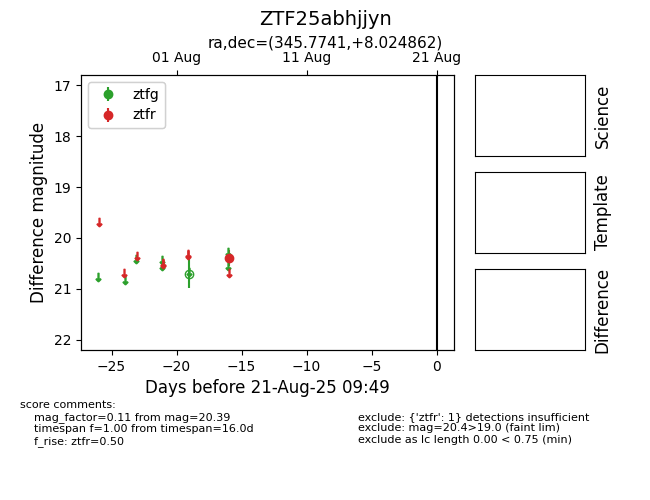

Target ZTF25abhjjyn at 2025-08-21 09:49, see:
FINK: fink-portal.org/ZTF25abhjjyn
Lasair: lasair-ztf.lsst.ac.uk/objects/ZTF25abhjjyn
ALeRCE: alerce.online/object/ZTF25abhjjyn
alt names
ZTF25abhjjyn (ztf,alerce)
coordinates:
equatorial (ra, dec) = (345.7741,+8.02486)
galactic (l, b) = (82.3437,-46.13430)
photometry
last ztfr=20.39
1 ztfr detections
